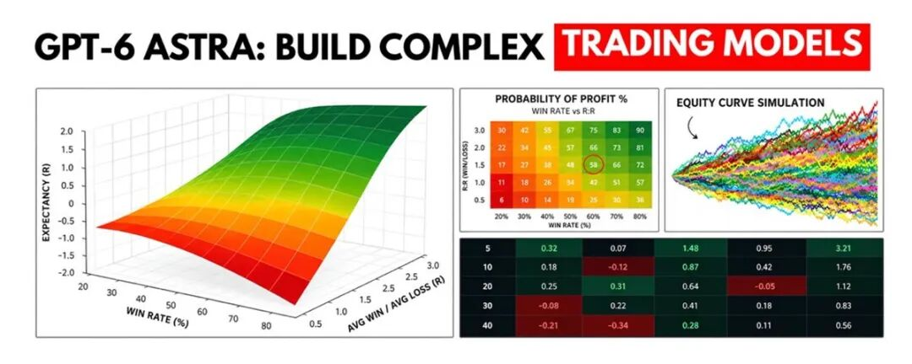
一条推文把话说到了顶。
发帖人说自己写了 6 页研究论文，讲怎么把 GPT-6 Astra 用到极限，照着搭出对冲基金那套数学交易模型，还附上完整代码库。推文列了六条：四个数学模型、几条及格线、十个专职智能体、六层生产架构、一句提示词、一个周末出货。18 万次浏览，731 个赞。
顺着链接点进去，是一篇 X 长文，末尾写着 AgenKit 在 agenkit.xyz。
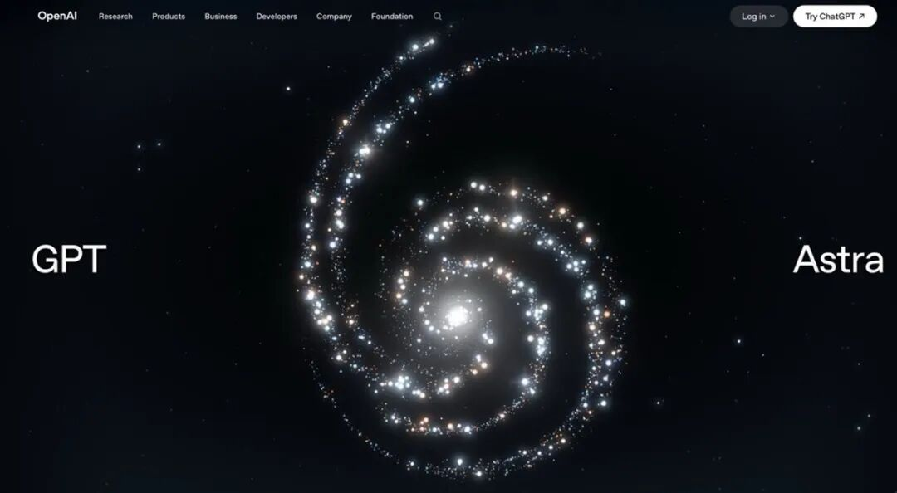
先把里面站得住的部分挑出来。
1. 六页纸里装了什么
配图是论文首页截图，双栏排版，标题是《如何用 GPT-6 Astra 在它的最高基准上搭一个 24/7 自我改进的一人对冲基金》。摘要第一句就把矛头对准同行：机构的能力护城河没有在 2026 年 9 月塌掉，塌掉的是只会用聊天机器人那条护城河。
这话有一半是对的。
纸上的内容翻成白话，是六块：四个数学模型、验证阈值、一套装进 Codex CLI 的十人智能体工作流、六层生产架构、六个搭建步骤、一句启动提示词。
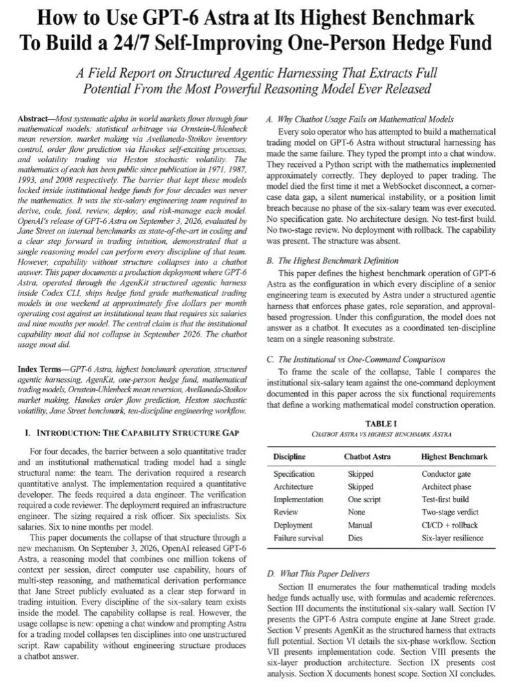
2. 四个模型，确实是真东西
四个模型都能追到公开发表的论文，它们是系统性收益里最主要的四条血管。
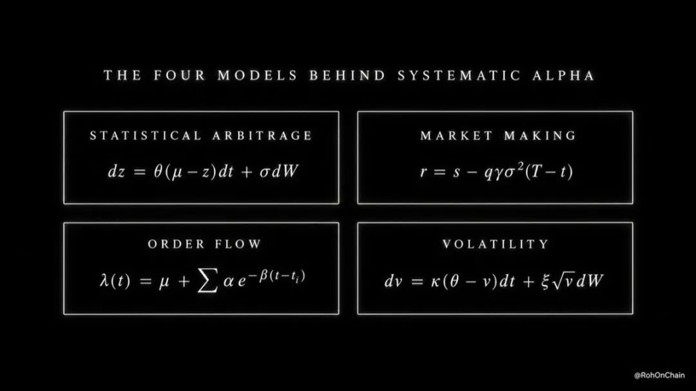
统计套利。两个走势同步的资产突然被扯开，数学上认定它们会弹回去，像拉长的橡皮筋。ETH 跳涨 3%，SOL 没跟，价差被拉开，就买 SOL、空 ETH，等收敛再平掉两条腿。背后是 Ornstein-Uhlenbeck 过程，θ 决定半衰期 ln(2)/θ，半衰期决定这个回归值不值得交易。奠基论文是 Engle 和 Granger 1987 年那篇。
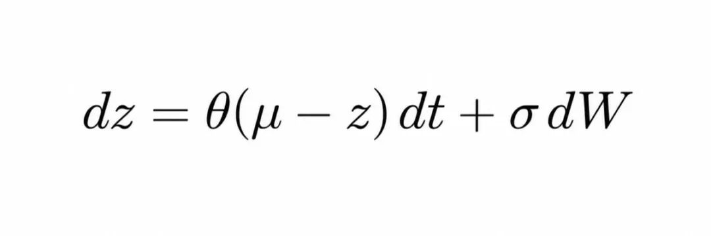
做市。相当于在市场和对手之间设一个收费站，报价略低于市价买、略高于市价卖，每一次来回收一次过路费。99.98 挂买、100.02 挂卖，赚 4 个点，一天重复 5000 次。真正的难点是库存，手里压着货时行情崩一下，之前收的过路费全吐回去。Avellaneda 和 Stoikov 在 2008 年给出了最优解：库存越多，报价就越往出清方向偏；波动越大，价差就该拉得越宽。
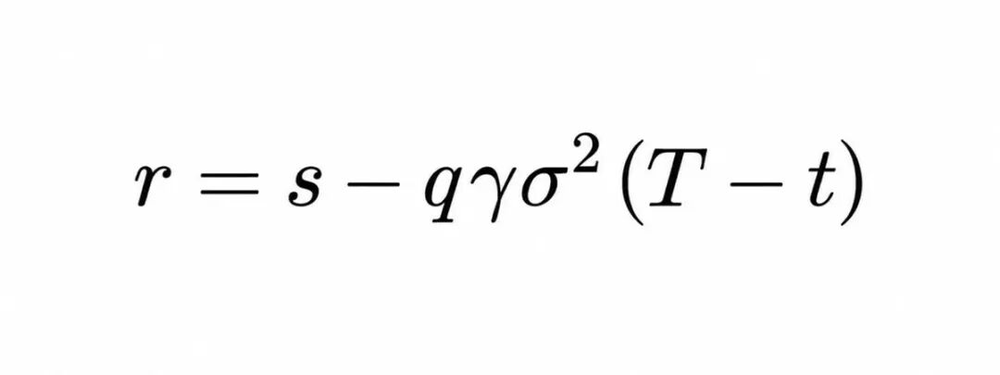
订单流预测。一笔主动买单会引出更多主动买单，像第一声掌声带起全场。鲸鱼在一个永续合约上砸 200 万美元，机器人跟着涌入，成交量在几分钟里炸开。谁能在第一秒识别出这波级联，谁就站到行情前面。数学工具是霍克斯过程，1971 年提出，它的 α/β 比值逼近 1 就意味着级联要来。这东西跑在现代高频台子的每一层里，散户基本没听过。
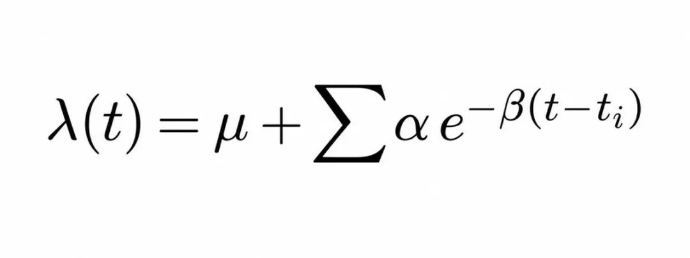
波动率交易。期权是对未来风暴的保险，定价基于一个猜测。猜测错了，就反过来做。期权隐含 45% 的波动率，模型算出公允值是 38%，这份保险贵了 7 个点，卖出它，对冲掉方向风险，赚那个修正。波动率会聚集、会均值回归、大跌时会跳升，Heston 1993 年的模型给的就是这套描述。
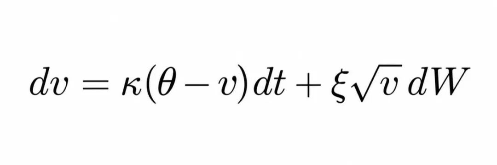
四个模型，四条公式，几十年的公开论文。这部分没问题，稀罕的是把它们同时交给一个模型。
3. 阈值不难，难的是阈值之外
论文给了五条及格线：夏普高于 1.5、最大回撤低于 15%、胜率高于 55%、t 值大于 2、五年滚动前推。
数值本身没问题，这套标准放在任何一家量化机构的验证流程里都不算低。问题在别处：阈值是筛子，不是产出。一个模型在历史上跑出夏普 1.5，也可能只是参数调到了刚好贴合那段行情的程度。美国金融业监管局早就点过这个风险，模型在训练数据之外的衰减无法预测。真实交易里还有一层更硬的账，价差、手续费、滑点，每一笔都要交，薄利策略的理论收益常被这几项吃掉大半。
胜率 55% 而盈亏比不划算，照样亏钱。回测赚三倍、实盘亏一半，在散户手里是常态。
4. 十个角色，换的是流程不是模具
论文真正卖的东西在这里。
它主张把 Astra 拆成十个专职角色：总指挥、后端架构师、测试工程师、代码评审、数据工程师、调试、前端、运维、性能与可观测性、安全。流程分六步，头脑风暴定规格、出架构、拆任务、测试先行的构建、双阶段评审、上线。
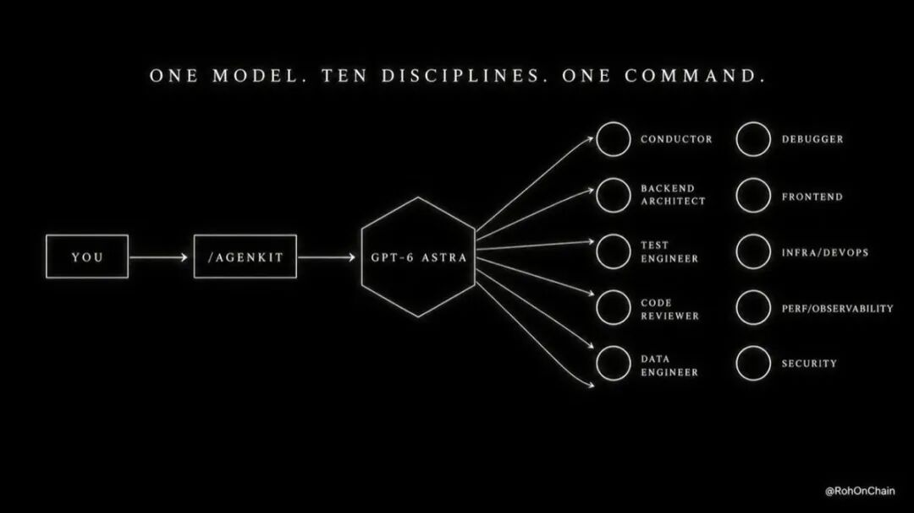
这套流程有它的道理。同一个模型，开个聊天窗口问它要一个交易模型，得到的是一段没有规格、没有架构、没有测试的脚本；给它一套带关卡的工作流，产出会完整得多。
作者把入口做成了一个工具，叫 AgenKit。官网写着自己不是模型，是套在模型外面的工程流程，支持七种终端工具。长文里写的价格是 4.99 美元一个月，官网今天挂的是创始价 3.49 美元，限前 100 名，之后 15 美元。装完就是两句命令：
npx agenkit activate <your-license-key>
npx agenkit install engineering-kit
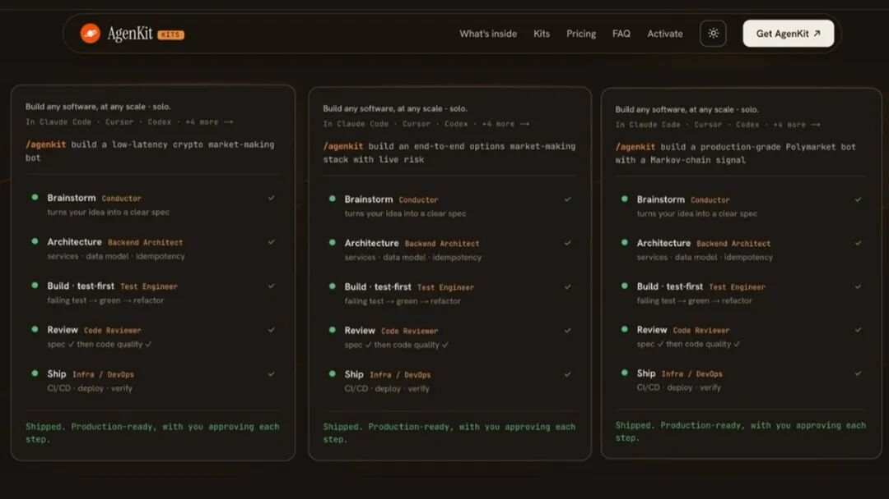
启动的那句话长这样：
@agenkit build an Avellaneda-Stoikov market making model for Hyperliquid perps
六个步骤走完是六张卡：装外壳、装 AgenKit、发那句话、回答总指挥的问题、看着它构建、上线并迭代。
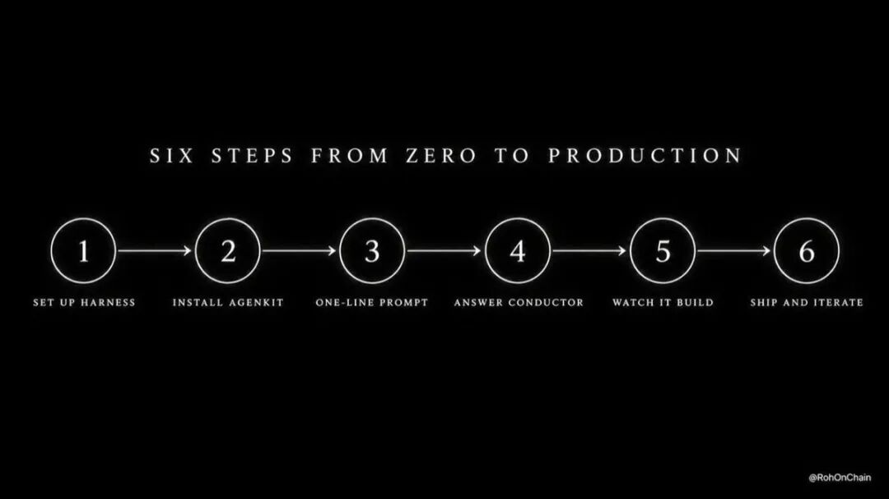
这套东西值得看的地方跟提示词无关，跟流程有关。同一篇文章里也承认，模型不缺能力，缺的是结构。这个结论放到企业侧看是另一面：智能体真正卡住的位置从来不在聪明程度，而在没有人给它定义验收标准。
5. 官方那条线，方向完全不同
论文里有两段「官方背书」，需要还原一下。
一段是三天前 OpenAI 发布了金融服务版 ChatGPT，跑在 Astra 上。这条是真的。2026 年 9 月 11 日发布，设计伙伴是摩根士丹利和 Evercore，内置 Daloopa、PitchBook、LSEG News、Crunchbase 的数据，官方说法是帮投行和股票研究团队做研究、搭财务模型、按公司模板出材料。路透社的报道标题更直白，说它瞄准的是华尔街初级分析师的饭碗。
另一段更唬人：Jane Street 测过 Astra，结论是编程达到当前领先水平，交易直觉比上一代明显进步。
这段话确实存在，但出处是 OpenAI 发布页上一位 Jane Street 工程师的评价，说的是这家做市商在内部编程基准和「交易直觉评估」上的观感。把它读成一家量化机构的实盘结论，差别很大。
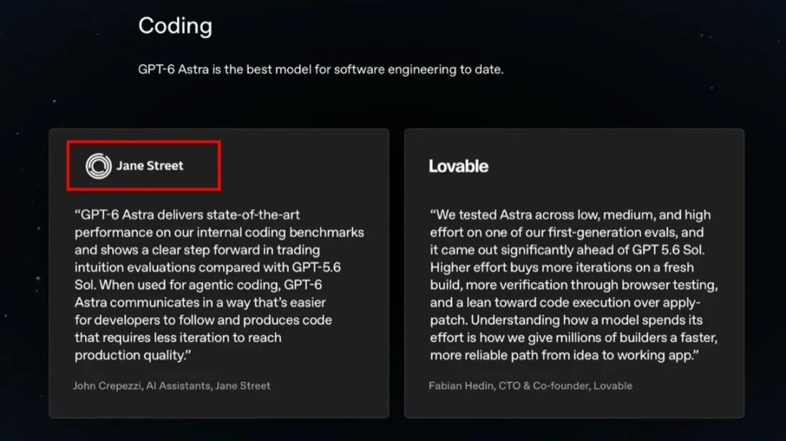
官方这条线卖的是分析和材料，投行里的人拿它写研报、做模型、出材料，人还在决策位上。把同一套推理能力接到券商接口上自动开仓，是另一件事，风险也完全不在一个量级。
6. 真金白银的成绩单
自动交易的实盘数据不稀缺，结论也不太好看。
一只运行最久的 AI 选股 ETF，截至 2026 年 6 月的五年年化收益是 4.5%，同期标普 500 总回报指数是 13.4%。2026 年一场真金白银的模型交易赛里，六个顶级模型各拿 1 万美元入场，美国几家全部亏损，其中 GPT-5 亏掉 62.66%；同期港大一个项目在 A 股做实盘测试，海外模型同样出现明确亏损。
国内的情况类似。券商推的 T0 算法交易门槛在 30 万到 100 万元之间，实际使用中约 15% 的人短期跑赢过大盘，超过 60% 的人最终亏损。
还有一层风险跟模型好坏无关。全世界散户用的是同几个模型，读的是同一批新闻，一开仓就是同一批股票，算法趋同加上羊群效应，极端情况下会集中踩踏。2007 年一批量化基金因为策略太像同时夺路而逃，互相踩踏，巨亏收场。这不是假设，是发生过的事。
7. 墙挪了地方，没塌
论文里最漂亮的一句是「数学从来不是墙，墙是那六个角色的薪水」。这句话在 2026 年确实成立了一半。研究员、开发、数据工程、评审、运维、风控，六个人、六到九个月、作者估算每个模型每年 180 万美元，这套人力成本现在确实能被一个模型压掉。
但墙不止一面。
把策略写出来只是最前面那道门，后面还有资本门槛、券商与交易所的通道、机房共址的延迟、执行和成交冲击、样本外的衰减，以及监管对自动化交易的要求。机构真正的护城河从来不写在论文里，它写在共址机柜的租约、主经纪商的关系，和能承受三年回撤的自有资金上。这些没有一样能用 3.49 美元买回来。
四个公式写得再整齐，也不代表一个月之后还能赚到钱。
收尾
把这组材料拆完，剩下的是这些东西：四个真实存在的数学模型，一套有道理的工程流程，一个订阅制的工具，和一份自己写成论文格式的推广材料。数学是公开的，流程是有效的，其余部分得自己拿实盘去验。
有一句得记住，回测是一条漂亮的曲线，它不承担任何后果。
最后一问：你是把「夏普 1.5」当成入场券的人，还是知道这张票只解决第一道门、后面还排着五道门的人？答案没有标准，但很说明问题。
原文链接：https://x.com/RohOnChain/status/2099534337645719753